-=Around Town=-
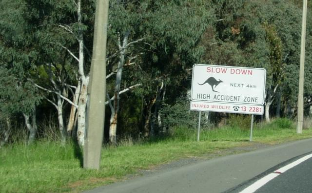
Got in around 9:30 AM, went straight to work, and made it through the day, to everyone's shock. The first week I feelt mildly depressed and a little absent--like my soul is somewhere over the Pacific trying to catch up, as William Gibson put it. After that, normal.
By now Rex has realized I've either been run over, or found someone who feeds me better than the housesitters and moved on.
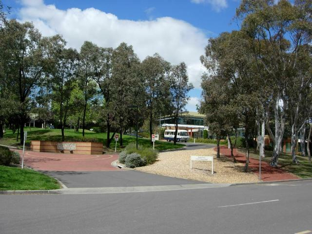
Work - DIMIA IT Annex at Fern Hill
People here are extraordinarly friendly, doing unasked favors in abundance. In the first week, I've been taken out to dinner (Indian) by six coworkers, taken on a tour of the Mononglo river by a family.
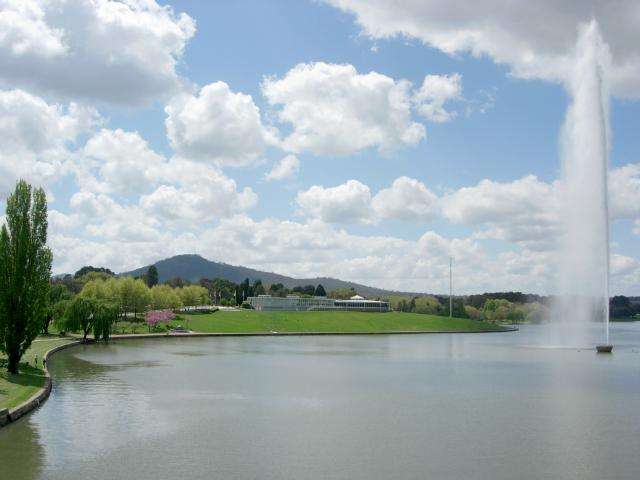
Tall fountain donated by the UK
...been driven to a SRF group (4 people) by Devinder, who would rather keep driving me than have me take my own car; been recognied at Starbucks by a SRF family and scooped up for a museum tour; had someone go home and make phone calls after I'd mentioned I was interested in hiking, invited over for dinner.
I work with a randy lot. They're always going off to matings. But whenever I tag along, there's no actual mighting. Just talk.
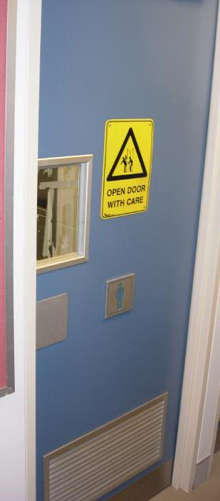
The Government is protective of individual privacy. In some regards.
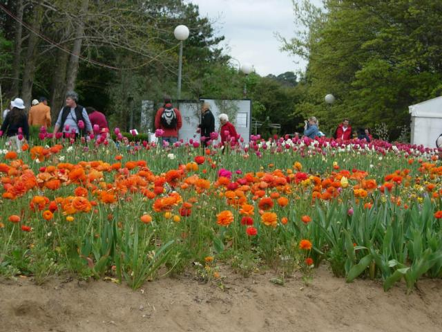
At the Floriade--a flower festival where I did most of my Christmas shopping.
I do sometimes have problems understanding people, or being understood. Like England, there are a bewildering variety of accents here. I've found that Paul Hogan Received Pronounciation is working class, and only one of the people I work with is a good model. Some have English accepts with an Aussie overlay, but basically everone I talk to sounds different!
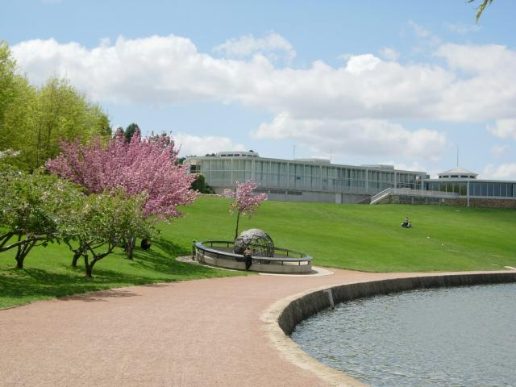
Captain Cook memorial. His routes are shown by metal strips on the globe.
Metal plates around the rim tell the story of his journeys around the world.
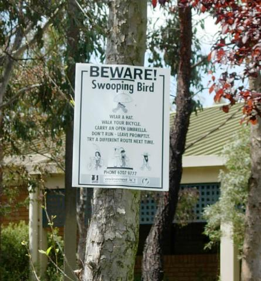
The birds here are monsters. They start out a crow size and get bigger.
During spring when there are chicks around, they chase or dive you.
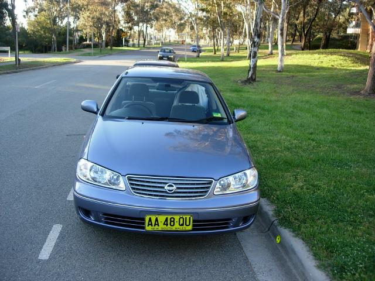
Hertz doesn't rent cars, it rents car enantiomers.
Peter and I are ribbing each other about who tries to get in on the wrong side most. So far, I've committed one major parity error (see below).
Parity Error
The town is built as a series of concentric circles a couple of miles across--quirky design, wierd to drive, but has worked to prevent sprawl. Every little neighborhood has a city center. And every center has a restaraunt row; the quality is extaordinary--nothing less than steller every time--and the variety enormous.
Peter and I are eating our way through town: duck leg with sticky rice and bok choy, Turkish lamb with eggplant puree, you just can't go wrong here (short of McDonald). You can get kangaroo/beer pies, but I didn't. I've discovered the U.S. doesn't have lamb, it has some tough stringy meat called lamb. I've introduced Peter to the delights of Water Boil Cow.
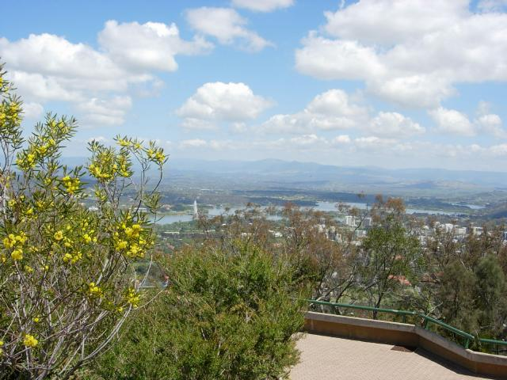
View of Canberra from Mt.Ainslie
Politics and Economics
|
|
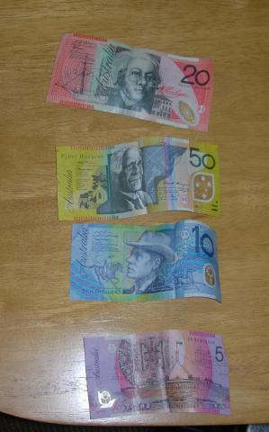
No mo Army green
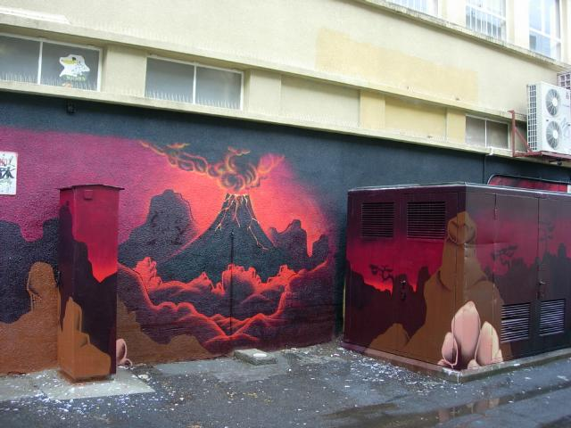 |
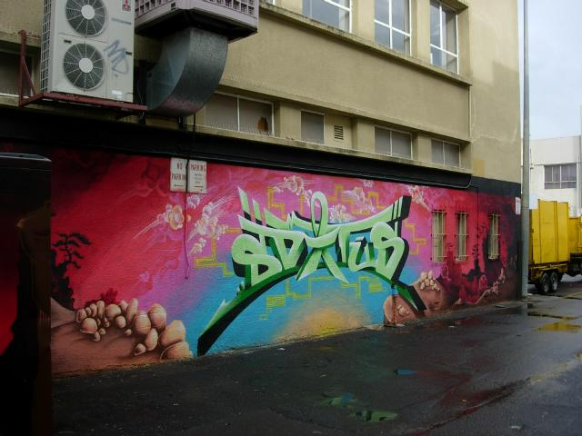 |
Graffitti Murals